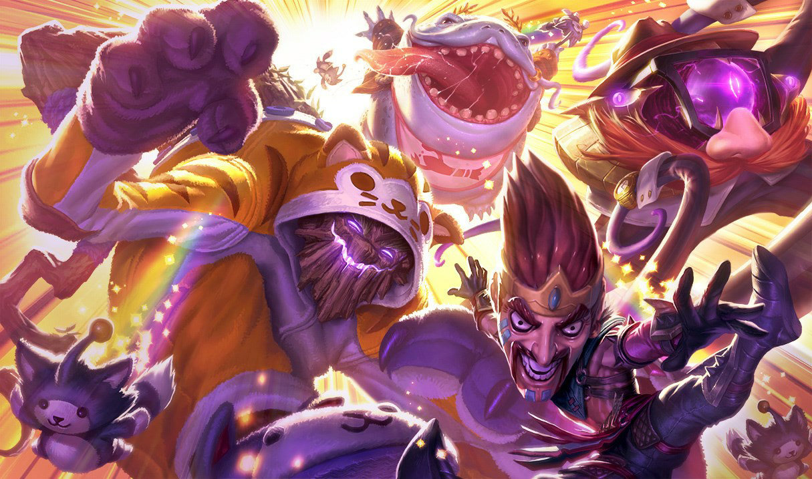

História do Draven
Ao contrario de seu irmão, Darius, a vitória em combate nunca foi o suficiente para Draven. Ele buscava por reconhecimento, aclame e glória. Seu primeiro passo foi a busca de grandeza no exército noxiano, mas sua personalidade dramática era desapreciada ao extremo. Sedento por uma maneira de mostrar "Draven" ao mundo, ele voltou sua atenção para o sistema penitenciário. Lá ele se tornou a celebridade que desejava ser, transformando a tediosa tarefa de executar prisioneiros em um espetáculo artístico.
Na primeira execução que desempenhou, os espectadores ficaram chocados após Draven ordenar que o condenado corresse para salvar a própria vida. Pouco antes do prisioneiro deixar o local, ele o derrubou com um arremesso certeiro de seu machado. Pouco tempo depois, todas as execuções de Draven se tornaram uma manobra com a qual os prisioneiros de Noxus lutavam por uma última chance em vida. Ele usava os julgamentos como seu próprio palco, e transformava as execuções em um espetáculo de entretenimento. Levava os espectadores à loucura, enquanto os prisioneiros desesperados se desdobravam para escapar, embora nunca conseguissem. Rejeitando o solene uniforme preto dos carrascos noxianos, Draven trajava roupas brilhantes e desenvolveu movimentos marcantes para se distinguir. Multidões imensas lutavam por uma chance de assistir a Draven em ação, e histórias de suas apresentações se espalhavam tão rápido quanto o fogo. Conforme crescia sua popularidade, juntamente aumentava seu ego. Ele pertencia ao centro das atenções. Pouco tempo depois, o escopo de suas ambições superou a população de Noxus. Ele decidiu que as gloriosas façanhas de Draven deveriam ser exibidas para o mundo todo.
O 'melhor' é onde eu decido colocar os limites de cada dia.
Inspiração
do Campeão
Conhecido por ser um inferno na bot lane quando bem jogado o campeão é capaz de punir qualquer deslize dos seus inimigos com machados cheios de dano.
A arrogância e ego inflado do campeão, que vemos em suas poses e frases, também pode ser encontrada na história dele, que mais do que qualquer coisa, quer ter a mesma glória de seu irmão

Já sua morte é diretamente inspirada nos momentos finais do protagonista de Cowboy BeBop, incluindo o “bang” feito com os dedos instantes antes da morte.
Skins do Draven
Draven Clássico

Draven Ceifador
Lançamento: 04/06/2012
Preço: 1350 RP
Draven Gladiador

Lançamento: 24/03/2013
Preço: 975 RP
Draven Locutor
Lançamento: 19/06/2014
Preço: 975 RP
Draven Curtindo o Verão
Lançamento: 24/06/2015
Preço: 975 RP
Draven Caçador de Feras
Lançamento: 03/02/2016
Preço: 750 RP
Draven Draven
Lançamento: 30/03/2016
Preço: 500 RP
Draven Noel

Lançamento: 11/12/2017
Preço: 1350
Draven Reinos Mech
Lançamento: 14/01/2020
Preço: 1350 RP
Draven Destruído
Lançamento: 20/01/2021
Preço: 1350 RP
Draven Galante

Lançamento: 08/12/2021
Preço: 1350 RP
Draven Noite Apavorante
Lançamento: 21/09/2022
Preço: 1350 RP